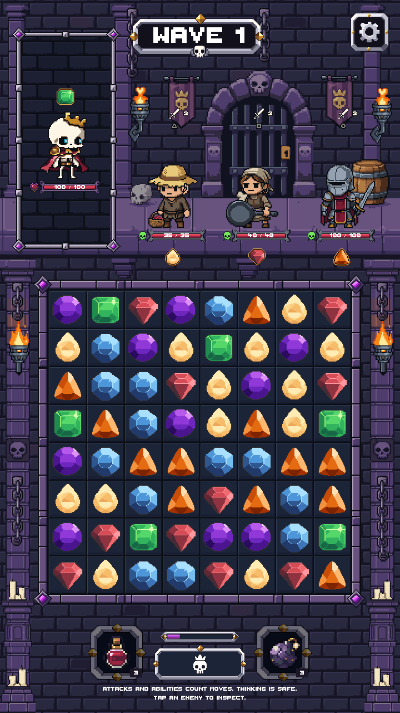
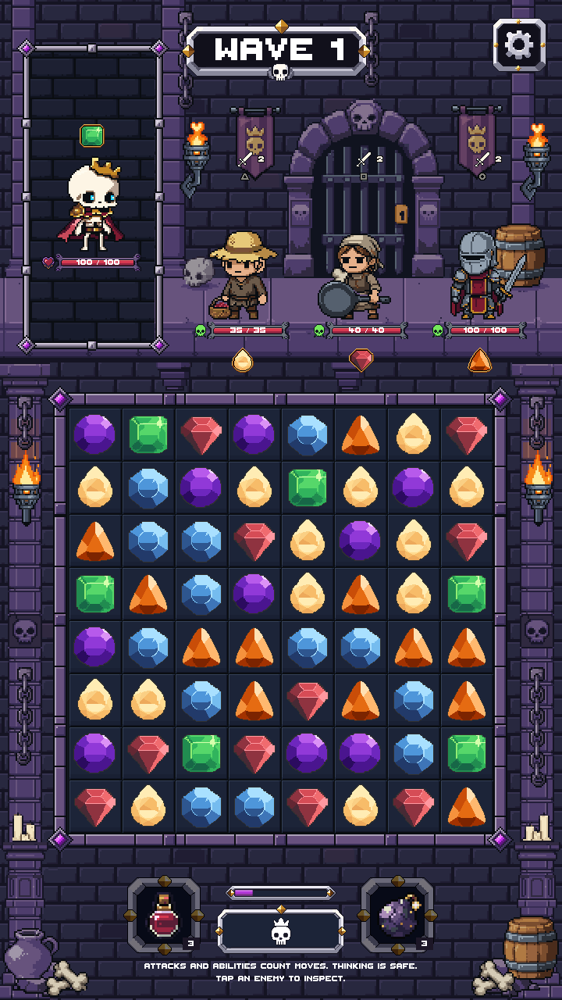

The paired captures use the same paused gameplay frame. The before capture disables the new corner groups and restores the former pillar termination in Unity; it is not an older binary capture. The 360×640 layout moves corner decorations outward where needed to avoid covering controls. The safe-area view simulates insets of left/right 24, bottom 96 and top 120 physical pixels.